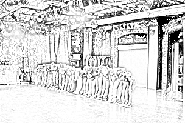

Current Research
My current research examines contextual development and well-being at a Green Door Theatres (Pseudonym) after-school program in urban Los Angeles. Along with traditional ethnographic methods, I introduce the use of electrodermal activity a psychophysiological response as part of a qualitative protocol rather then its traditional quantitative use. The research spanned one school year with follow up visits still taking place now. The thriving community at Green Door Theatre welcomed me through their open doors as much as they welcome the children and youth they serve.
Green Doors Theatre's open door. Whenever the staff is present, this door remains open to children, youth, and any other community members who stop by for a chat or cup of coffee.

The black-box professional theatres stage. This is also where youth programming unfolds.

The youth and I during the 2017 end of year performance. Photo credit to Green Door Theatre.
Every year the theatre hosts a Dia de los Muertos block party with local performers and vendors, face painting, and a community alter.